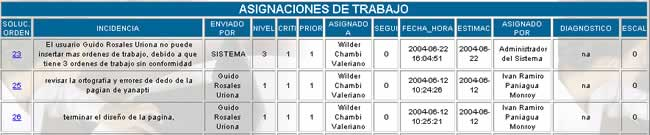
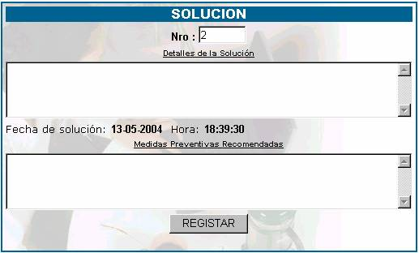

ASIGNACIONES
En esta opción usted solamente podrá ver las
ordenes de trabajo que le asignaron, como se muestra en la siguiente pantalla.

Soluc. Orden; Indica el número de orden de mesa que le fue asignada. Si usted desea
introducir la solución a su asignación, entonces haga click
en el número de orden de mesa que le mostrará la siguiente pantalla.

En el primer campo, introduzca los detalles
de la solución al incidente ocasionado. Como podrá ver, debajo de los detalles
aparece especificada la fecha y la hora en el momento en que usted brinda una
solución.
Introduzca las medidas preventivas que usted
recomienda para que el incidente no se vuelva a repetir.
Luego haga click
en el botón REGISTRAR no
presione este botón si no está seguro de los datos que introdujo.
Problemas.
Incidencia; especifica la descripción de la incidencia a la cual
se le tiene que dar solución. Se denomina incidencia, a todas las
consultas de los clientes sin aclarar la naturaleza de las mismas, pudiendo
ser: reclamos, denuncias, dudas operativas, técnicas, de normatividad,
aplicación, obtención de información, desarrollo, etc.
Nivel; como resultado de la evaluación de la consulta del
cliente se debe definir el nivel correspondiente. Los niveles especificados son
Nivel 1, Nivel 2 y Nivel 3.
1 à Cuando se puede atender una consulta y resolverla sin
requerir de la participación de especialistas en áreas específicas.
2 à Cuando
la solución excede las posibilidades del coordinador de la mesa de ayuda o
existen políticas internas por las que no corresponde que éste dé directamente
la solución, se asigna la incidencia a un especialista interno de otro sector.
Las áreas de 2do. nivel son de soporte a usuarios y soporte técnico de PCs, así como de operación de LAN,
WAN. Se incluyen las Unidades Internas.
3 à Es cuando la
realización de actividades requiere un alto nivel de sofisticación de la
tecnología con una alta especialización para resolverlo.
Criti;
describe la criticidad que será sugerida por el usuario y confirmada por el
especialista donde:
1 à
Altamente crítico
2 à
Medianamente crítico
3 à
Poco o no crítico
Criticidad alta. Comprenderán las solicitudes de impacto a nivel de
los clientes y de la institución.
Criticidad media. Cuando el impacto sólo es a nivel de la institución.
Criticidad baja. Cuando representa una mejora pero no altera el servicio
o proceso afectado.
Prior; describe la prioridad que será asignada por el
especialista y comunicado al usuario donde:
1 à
Alta
2 à
media
3 à
baja
Asignado; muestra su nombre
Fecha y Hora; muestra la fecha y la hora en la que fue asignada la
orden de trabajo.
Estima; es la fecha aproximada de solución.
Asignado Por; Indica el Nombre del Coordinador de la Mesa de
Ayuda, quien es el que registra la orden.
Diagnóstico; en esta parte se visualiza las características del
problema.
Escal;
Indica el nombre de la persona hacia la cual fue realizada el escalamiento, en
caso de tener algún problema para la solución.